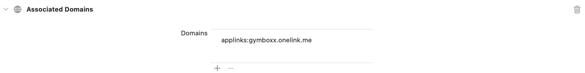

React Native에서 딥링크 구현하기
현재 저희 팀에서는 유저들의 챌린지 참여율을 높이기 위해 다방면에서 노력하고 있습니다. 저희는 챌린지 소개 및 신청 화면에 보다 용이한 접근을 위해 딥링크를 적용하기로 하였습니다. 리액트 네이티브에서 어떻게 딥링크를 구현했는지 작성해보겠습니다.
딥링크
딥링크란 모바일 환경 속 유저를 웹사이트가 아닌 앱의 특정 화면에 도달할 수 있게 해주는 링크입니다. 마케팅, 참여 유도 캠페인, 쇼핑 등에 활용됩니다.
대게 URI Scheme 방식을 사용하는데, URI Scheme 은 Scheme://Path 라는 두 가지 요소로 구성됩니다. Scheme 은 앱을 특정 짓고, Path 는 도달할 화면을 의미합니다.
myapp://example
Scheme 은 중복될 수 있다는 단점이 있어 자신의 앱을 특정 지을 수 있도록 최대한 유니크하게 작명해야 합니다. 만일 Scheme 이 중복된다면, 사용자는 어떤 앱을 열 것인지 선택해야 할 것입니다.
유니버셜 링크 & 앱링크
애플의 유니버셜 링크와 안드로이드의 앱링크는 딥링크와 비슷하게 작동하는 url 기반의 링크입니다. 딥링크와는 다르게 사용자는 웹사이트를 거쳐 앱으로 이동하게 됩니다. 만약 앱이 설치되어있지 않다면, 앱스토어로 이동하게 됩니다.
리액트 네이티브에서 적용하는 법
ios
RCTLinking 을 프로젝트에 연결해주기 위해 아래와 같은 코드를 AppDelegate.m 에 추가합니다.
// 파일 최상단에 추가:
#import <React/RCTLinkingManager.h>
// `@end` 위에 추가:
- (BOOL)application:(UIApplication *)application
openURL:(NSURL *)url
options:(NSDictionary<UIApplicationOpenURLOptionsKey,id> *)options
{
return [RCTLinkingManager application:application openURL:url options:options];
}
유니버셜 링크를 적용할 예정이라면, 아래 코드 또한 추가해줍니다.
// `@end` 위에 추가:
- (BOOL)application:(UIApplication *)application continueUserActivity:(nonnull NSUserActivity *)userActivity
restorationHandler:(nonnull void (^)(NSArray<id<UIUserActivityRestoring>> * _Nullable))restorationHandler
{
return [RCTLinkingManager application:application
continueUserActivity:userActivity
restorationHandler:restorationHandler];
}
이제 xcode 를 켜고 프로젝트의 info 탭으로 이동합니다. 딥링크가 작동할 수 있도록 URL Types 에 아이템을 하나 추가해줍시다.
유니버셜 링크를 적용할 예정이라면, Signing & Capabilities 의 Associated Domains 에 도메인을 추가해줍시다. 저희는 원링크를 통해 유니버셜 링크를 적용했기 때문에 아래 사진과 같이 도메인을 추가하였습니다.

android
android/app/src/main/AndroidManifest.xml 를 아래와 같이 수정해줍시다.
<activity
android:name=".MainActivity"
android:launchMode="singleTask">
<intent-filter>
<action android:name="android.intent.action.MAIN" />
<category android:name="android.intent.category.LAUNCHER" />
</intent-filter>
<!-- 아래 코드를 추가 -->
<intent-filter>
<action android:name="android.intent.action.VIEW" />
<category android:name="android.intent.category.DEFAULT" />
<category android:name="android.intent.category.BROWSABLE" />
<data android:scheme="myapp" />
</intent-filter>
</activity>
앱 링크를 적용할 예정이라면, 아까 추가한 intent-filter 에 아래 코드 또한 추가해줍니다.
<data android:scheme="https" android:host="www.example.com" />
<data android:scheme="http" android:host="www.example.com" />
** 원링크와 같은 제3자 서비스가 아닌 자체적으로 유니버셜 링크를 개발하고자 한다면 더 많은 과정이 추가될 수 있습니다.
Linking
딥링크로 앱이 열리게 되면, 우리는 해당 이벤트를 전달 받아 원하는 바를 수행할 수 있습니다. React Native 의 Linking 을 통해 이를 구현해봅시다.
Linking.getInitialURL().then(url => {
if (url) {
// 코드
}
});
앱이 링크를 통해 구동되었다면, url 을 반환하고 아니라면 null 을 반환합니다. 정규식을 통해 /deep_link_value=1234 에서 1234 를 가져올 수 있도록 하였습니다.
useEffect(() => {
const subscription = Linking.addEventListener("url", ({ url }) => {
if (url) {
// 코드
}
});
return () => {
subscription.remove();
};
});
앱이 실행 중인 상태에서 링크를 처리하는 이벤트 핸들러입니다. 두 가지 모두 상황에 맞게 작성하면 되겠습니다 :)
마무리하며
이렇게 해서 리액트 네이티브에서 딥링크 와 유니버셜 링크, 그리고 앱링크를 사용하는 법에 대해 알아보았습니다. 원활한 테스트를 위해 시뮬레이터가 아닌 실제 기기에서 테스트 해보는 것을 추천드립니다.
그럼 즐거운 RN 개발 되세요!